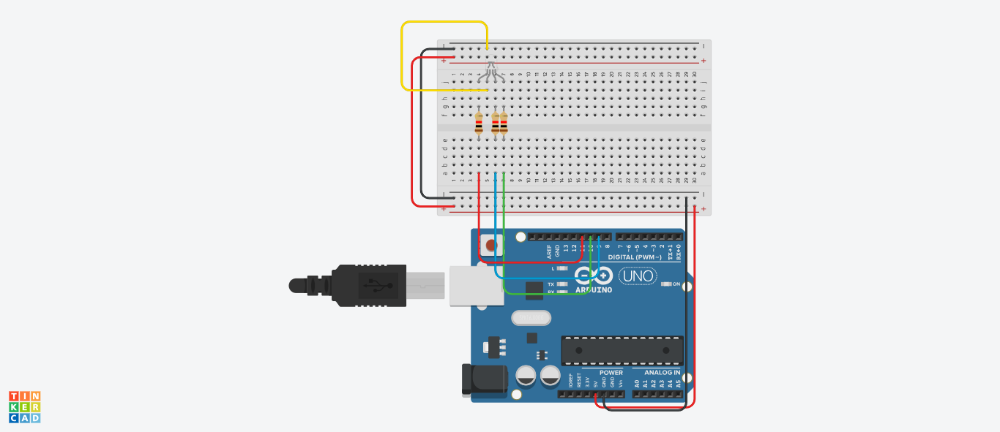

12-variant
1-topshiriq
Internet vositalari tizimi fanidan amaliy vazifa:
Arduino platasini yoqganingizda, RGB LED qizil yonadi,
keyin ko'k, keyin yashil yonadi. Qizil 2 soniya, ko'k 5 soniya,
yashil 10 soniya yonadigan dastur tuzing.

C++ (Arduino) kod:
2-topshiriq
Internet ilovalarni ishlab chiqish fanidan fanidan amaliy vazifa:
Dollarni so'mga va so'mni dollarga o'giradigan dasturni tuzing.
Foydalanuvchi pulni kiritishi kerak bo'ladi, <select> orqali
pul jinsini tanlash kerak bo'ladi, va “o'girish” tugmasini bosishi kerak bo'ladi.
HTML:
CSS:
JavaScript:
3-topshiriq
OYD va tarmoq dasturlash (C++, Java) fanidan fanidan amaliy vazifa:
Omborda ma'lum sondagi qutilar mavjud (qutilar sonini foydalanuvchi kiritadi).
Yuk mashinalari birma-bir kelganda ularga ortiladigan qutilar soni
foydalanuvchilar tomonidan kiritilib borilsin. Mashinaga omborda qolgan qutilar
sonidan ko'p quti ortilishi berilsa foydalanuvchiga bu haqida ma'lumot berilsin,
omborda qolgan qutilar sonini ko'rsatsin va ushbu tartibdagi yuk mashinasiga
qayta quti ortilishi so'ralsin. Agar ombordagi barcha qutilar yuk mashinalariga
ortib bo'linsa qutilar qolmaganligi haqida habar beradigan dastur tuzilsin.
C++: